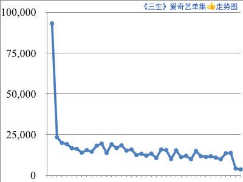
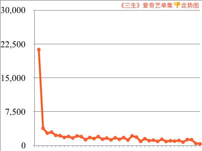
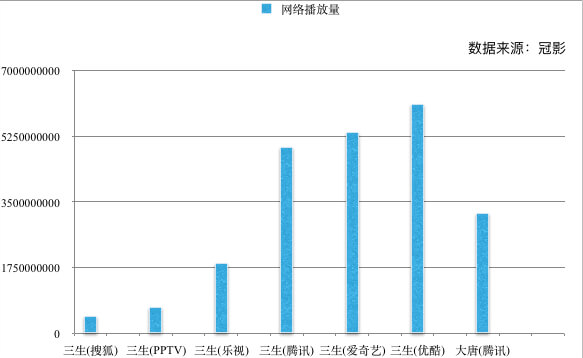
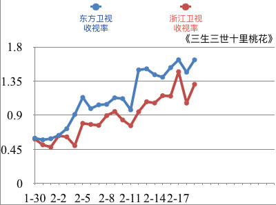
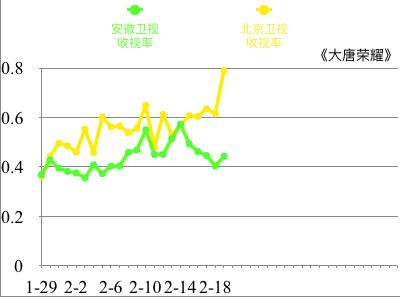
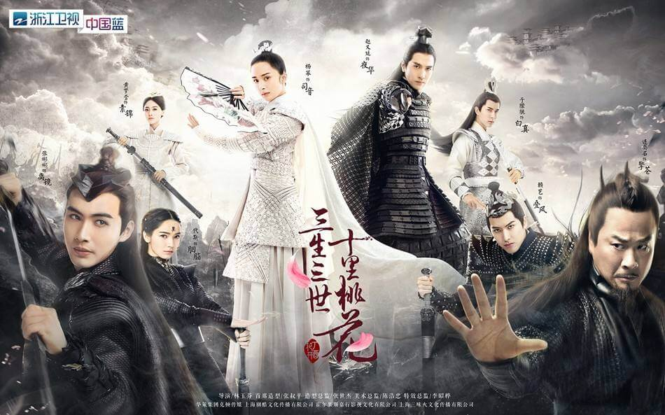

作为今年开年大剧，电视剧《大唐荣耀》和《三生三世十里桃花》自开播以来，都取得了不俗的成绩。不仅网络播放量和电视剧收视率各领风骚，电视剧相关话题频频占领微博热搜榜，两位男主“广平王”任嘉伦和“天族太子”赵又廷更是因为剧中表现吸粉无数，这在国产电视剧中算得上罕见。
《大唐荣耀》相当于“一匹黑马”，本身改编IP并没有特别大的受众，话题度并不高，但是凭借电视剧本身不流于表面的电视剧情节和演员演技，取得了不错的成绩。所以《大唐荣耀》的成功属于意料之外，情理之中。
不同于大唐荣耀，《三生三世十里桃花》本身就是一个大热的IP小说，因为小说本身自带抄袭风波以及三生演员阵容破具争议性，所以让该剧还没开播就先被推到了风口浪尖。然而，现在看来对于此剧各方反响都还不错，网友纷纷表示改编还原程度极高，剧情一反传统电视剧三角恋等狗血套路，不走寻常路的做法赢得了很多观众的青睐。除此之外，制作也是颇为良心，对于《三生三世十里桃花》的热度可谓锦上添花，推波助澜。
但是当下这两部大火的电视剧，到底谁比谁更胜一筹呢？当《三生》遭遇《大唐》，当“情深太子”遭遇“长安醋王”，谁能锋芒更盛？为了得到一个较为准确的结果，从以下几个维度来说明。
网络播放平台热度比较
电视剧《大唐荣耀》网络方面是由腾讯视频独家播出，而《三生三世十里桃花》的网络播放平台有很多，其中包括优酷，爱奇艺，PPTV，乐视，搜狐和腾讯。 相较于腾讯独播的《大唐荣耀》，《三生三世十里桃花》虽然因为多平台网络播放，直接导致单平台网络播放量和评论被分散了，理论上单平台成绩略显弱势。但是立足于电视剧全网网络播放总量，多平台播放对于电视剧本身很明显是利大于弊的。
考虑到每个观众用户对于所使用播放平台本身的个人喜好问题，多平台播放的《三生三世十里桃花》取得了更多的关注，能被更广大的人群所了解。会因为电视剧入驻的播放平台越多，电视剧全网的网络播放总量会更高，弹幕和评论也都与播放总量同理。为了验证这一假设，我们使用了 冠影指数（ http://www.filmboard.cn/）提供的大数据信息得到了两部电视剧全网的网络播放数据和点赞数据。



网络播放数据呈现的结果同一开始的假设不谋而合：《三生三世十里桃花》占据了平台优势，比《大唐荣耀》获得了更高的热度和更高的关注度。为今后电视剧营销提供了参考价值，网络多平台播放带来利处是远远大于弊处的。
微博话题热搜比较
随着互联网的日新月异地发展，微博逐渐渗透进了当代人的生活中，成为广泛讨论各种当下“流行”的交流平台，因而观众对于电视剧的反响能够直接反映在微博话题数据中。所以我们可以通过电视剧相关话题的微博热搜以及对应话题粉丝量和阅读量来衡量一部电视剧最近的国民火热程度。
《三生三世十里桃花》电视剧自开播以来，单单与电视剧同名话题#电视剧三生三世十里桃花#这个话题截至目前阅读量已经达到75.2亿，讨论3439.8万，粉丝3.3万。 但是#大唐荣耀#话题阅读量才22.8亿，讨论188.9万，粉丝1.2万。此外，《三生》剧中除了男女主其他参演人物也都以各种话题花样上了微博热搜。相比之下，《大唐》就有些相形见绌了。《大唐》的微博热搜话题主要是围着男女主的，其中以男主任嘉伦相关热搜话题最多。
“双拳难敌四手”，所以总体上，不论单个话题热度也好，还是微博电视剧相关话题数量也罢，《大唐》都逊于《三生》。
电视台收视率比较
利用冠影指数提供的《三生三世十里桃花》和《大唐荣耀》CSM52黄金档的电视收视率数据，得到如下折线图。


通过收视率变化趋势图可得，最开始《三生三世十里桃花》和《大唐荣耀》电视收视率是不相上下的，一开始两部剧开播出现收视率都呈现出疲软之态、无法收视破1。两部电视剧都是同时段在两个电视台同时播出，电视剧收视率本身虽然有所分散，但是取总收视率之和，还是可以看出《三生三世十里桃花》略胜一筹。
再来，《三生》与《大唐》呈现出齐头并进的态势，但是后期，随着《三生三世十里桃花》剧情地不断发展、热门话题地不断发酵，《三生三世十里桃花》开始了逆袭之路。槽点与创新并发，让《三生三世十里桃花》开始拉大了与《大唐荣耀》的差距。《三生三世十里桃花》一枝独秀的势头逐渐明朗起来，直到现在《三生》在播的浙江和东方卫视分别位列黄金八点档全国收视率冠亚军、独占鳌头，一时风光无限。
综上所述，《三生三世十里桃花》与《大唐荣耀》热度上孰胜孰负已然不言而喻。不得不提的是，虽然《三生三世十里桃花》在热度上远远盖过了《大唐荣耀》，但是《三生三世十里桃花》因原小说抄袭严重，所以很多时候这部电视剧的口碑受了很大的影响，豆瓣评分徘徊在六分左右。

反观《大唐荣耀》以历史为骨，描绘出了在乱象丛生的年代背景下，沈珍珠被尔虞我诈的权势争夺与单纯的儿女情长所浸透的人物成长史，因而获得了更加不错的口碑，豆瓣评分基本固定在七分档。
人无千日好，花无百日红。仅仅依靠热度炒起的剧，很难长久火热下去。想要电视剧取得真正的成功，还是要注重剧本和电视制作的质量以及演员演技才能无往而不利。
本文数据来源：冠影指数http://www.filmboard.cn/